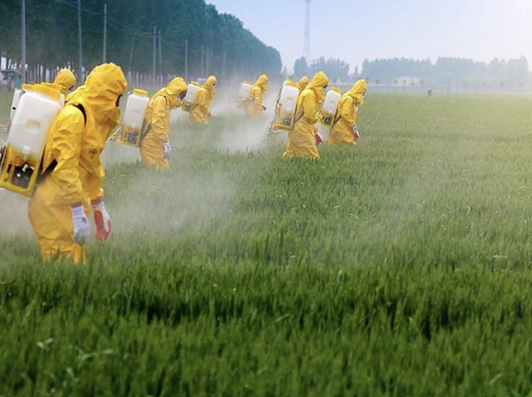

Pesticides et engrais : lequel est le plus polluant ?

Nous parlons souvent de la pollution actuelle liée aux pesticides et aux engrais. Mais quelles sont réellement leurs conséquences sur les écosystèmes et l’environnement ? Et quel est le lien entre ces deux substances ?
Les engrais permettent de faire pousser les plantes plus rapidement grâce à des apports en phosphate, azote et potassium. Cependant, cette croissance accélérée a un coût : les plantes sont fragilisées, les écosystèmes sont déséquilibrés et les ravageurs se développent plus facilement. C’est dans ce contexte que les pesticides interviennent.
Les engrais
Les engrais apportent des nutriments très concentrés aux plantes pour augmenter les rendements. On peut presque parler de « dopage » des cultures. Mais toutes les espèces ne supportent pas ces apports artificiels.
Les plantes sauvages sont souvent adaptées à des sols pauvres et à une croissance lente. L’utilisation d’engrais peut alors brûler les racines, perturber l’équilibre naturel et favoriser la disparition des espèces locales au profit des plantes cultivées. Cela contribue à une perte globale de biodiversité. :contentReference[oaicite:1]{index=1}
Historiquement, les engrais artificiels sont récents. Leur développement remonte au début du XXe siècle, avec Fritz Haber. Plus tard, certaines variétés agricoles ont été sélectionnées pour être compatibles avec ces engrais, ce qui a permis d’augmenter fortement la production dans certains pays touchés par des famines.
Les pesticides
Les pesticides ont été créés pour protéger les cultures contre les ravageurs comme les chenilles, pucerons ou vers. Mais leur action ne se limite pas aux organismes ciblés.
En réalité, les pesticides touchent de nombreux êtres vivants non visés. Ils contaminent les sols, l’eau, l’air et les organismes que nous consommons. On en retrouve même dans des zones très éloignées comme l’Arctique.
Des impacts environnementaux majeurs
Dans les sols, les pesticides peuvent persister pendant des années et détruire des micro-organismes essentiels à leur fertilité, comme certains champignons.
Dans l’eau, ils sont entraînés par la pluie vers les rivières et les lacs, mettant en danger les organismes aquatiques.
Dans l’air, ils participent à la disparition d’insectes indispensables, notamment les pollinisateurs, qui jouent un rôle fondamental dans l’équilibre des écosystèmes.
Des risques pour la santé humaine
Les particules de pesticides s’accumulent dans la chaîne alimentaire jusqu’à atteindre l’être humain. Un exemple marquant est celui du chlordécone utilisé dans les bananeraies aux Antilles. Ce pesticide a contaminé les sols, l’eau et les produits agricoles, avec de lourdes conséquences sanitaires.
Des liens ont été établis entre les pesticides et plusieurs maladies : cancers, notamment de la prostate, lymphomes, maladie de Parkinson, troubles neurologiques et perturbations endocriniennes.
Les enfants et les femmes enceintes sont parmi les plus vulnérables à ces effets.
Alors, lequel est le plus polluant ?
La réponse n’est pas totalement simple, car engrais et pesticides ne polluent pas de la même manière.
Les pesticides sont généralement considérés comme plus toxiques pour la santé humaine, tandis que les engrais perturbent fortement les écosystèmes et participent à la diminution de la biodiversité. Les deux posent donc de véritables problèmes, mais sous des formes différentes.